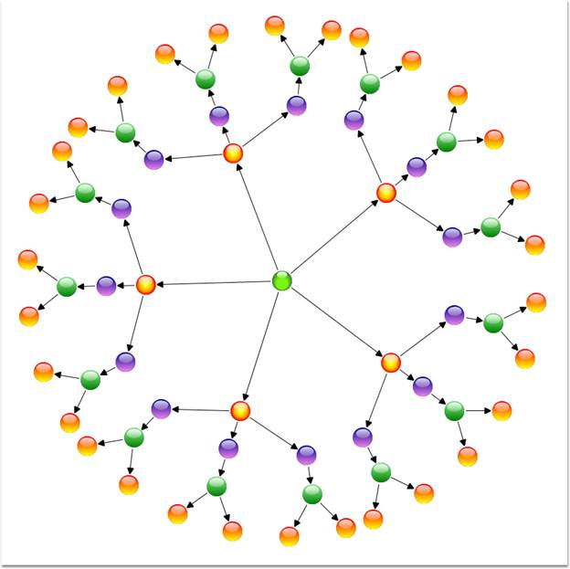

The Radial-TreeLayoutis a specialization of the Directed Tree Layout Manager that employs a circular layout algorithm for locating the diagram nodes. The Radial-Tree Layout arranges nodes in a circular layout, positioning the root node at the center of the graph and the child nodes in a circular fashion around the root. Sub-trees formed by the branching of child nodes are located radially around the child nodes. This arrangement results in an ever-expanding concentric arrangement with radial proximity to the root node indicating the node level in the hierarchy. However, it is necessary to specify a layout root for the tree layout. The Radial-Tree layout will position the nodes based on the layout root.
The Bounds property of the DiagramView class can be used to specify the position of the root node, based on which the entire tree gets generated.
Table 9: Property Table
|
Property |
Description |
Type of the property |
Value it accepts |
|
VerticalSpacing |
Gets or sets the Vertical spacing between nodes. |
CLR property |
Double |
|
HorizontalSpacing |
Gets or sets the Horizontal spacing between nodes. |
CLR property |
Double |
|
Bounds |
Gets or sets the bounds value which specifies the position of the root node in case of tree layout. |
CLR property |
Thickness |
Table 10: Methods Table
|
Name |
Parameters |
Return Type |
Description |
Reference Links |
|
RefreshLayout() |
Null |
void |
Refresh the layout |
N/A |
1. The LayoutType should be set to RadialTreeLayout in DiagramModel class.
|
[XAML]
<Window x:Class="RadialTreeLayout_2008.Window1" xmlns="http://schemas.microsoft.com/winfx/2006/xaml/presentation" xmlns:x="http://schemas.microsoft.com/winfx/2006/xaml" Title="Radial Tree Layout Demo" WindowState="Normal" WindowStartupLocation="CenterScreen" Name="mainwindow" xmlns:syncfusion="http://schemas.syncfusion.com/wpf" Icon="App.ico" FontWeight="Bold" xmlns:local="clr-namespace:RadialTreeLayout_2008" Height="1000" Width="900">
<!--Diagram Control--> <syncfusion:DiagramControl Name="diagramControl">
<!-- Model to add nodes and connections--> <syncfusion:DiagramControl.Model> <syncfusion:DiagramModel x:Name="diagramModel" LayoutType="RadialTreeLayout"> </syncfusion:DiagramModel> </syncfusion:DiagramControl.Model>
<!--View to display nodes and connections added through model.--> <syncfusion:DiagramControl.View> <syncfusion:DiagramView Name="diagramView"> </syncfusion:DiagramView> </syncfusion:DiagramControl.View> </syncfusion:DiagramControl>
</Window>
|
2. Then the nodes can be added and the connections can be specified as follows:
|
[C#]
//Define Spacings. diagramModel.HorizontalSpacing = 10; diagramModel.VerticalSpacing = 30;
Node n1 = new Node(Guid.NewGuid(), "n1"); n1.Level = 0; Node n2 = new Node(Guid.NewGuid(), "n2"); n2.Level = 1; Node n3 = new Node(Guid.NewGuid(), "n3"); n3.Level = 1; Node n4 = new Node(Guid.NewGuid(), "n4"); n4.Level = 1; Node n5 = new Node(Guid.NewGuid(), "n5"); n5.Level = 1; Node n6 = new Node(Guid.NewGuid(), "n6"); n6.Level = 1;
//Adding nodes to the diagram Model. diagramModel.Nodes.Add(n1); diagramModel.Nodes.Add(n2); diagramModel.Nodes.Add(n3); diagramModel.Nodes.Add(n4); diagramModel.Nodes.Add(n5); diagramModel.Nodes.Add(n6);
//Creating conections between nodes. Connect(n1, n2); Connect(n1, n3); Connect(n1, n4); Connect(n1, n5); Connect(n1, n6); diagramModel.LayoutRoot = n1;
//Creating connection and adding to the model. void Connect(Node HeadNode, Node TailNode) { LineConnector connection = new LineConnector(); connection.ConnectorType = ConnectorType.Straight;
// Specify the TailNode node. connection.TailNode = TailNode;
//Specifying the Head Node. connection.HeadNode = HeadNode; connection.TailDecoratorShape = DecoratorShape.Circle;
//Adding to the Diagram Model. diagramModel.Connections.Add(connection);
} |
|
[VB]
'Define Spacings. diagramModel.HorizontalSpacing = 10 diagramModel.VerticalSpacing = 30
Dim n1 As New Node(Guid.NewGuid(), "n1") n1.Level = 0 Dim n2 As New Node(Guid.NewGuid(), "n2") n2.Level = 1 Dim n3 As New Node(Guid.NewGuid(), "n3") n3.Level = 1 Dim n4 As New Node(Guid.NewGuid(), "n4") n4.Level = 1 Dim n5 As New Node(Guid.NewGuid(), "n5") n5.Level = 1 Dim n6 As New Node(Guid.NewGuid(), "n6") n6.Level = 1
'Adding nodes to the diagram Model. diagramModel.Nodes.Add(n1) diagramModel.Nodes.Add(n2) diagramModel.Nodes.Add(n3) diagramModel.Nodes.Add(n4) diagramModel.Nodes.Add(n5) diagramModel.Nodes.Add(n6)
'Creating conections between nodes. Connect(n1, n2) Connect(n1, n3) Connect(n1, n4) Connect(n1, n5) Connect(n1, n6) diagramModel.LayoutRoot = n1
'Creating connection and adding to the model. void Connect(Node HeadNode, Node TailNode) Dim connection As New LineConnector() connection.ConnectorType = ConnectorType.Straight
'Specify the TailNode node. connection.TailNode = TailNode
'Specifying the Head Node. connection.HeadNode = HeadNode connection.TailDecoratorShape = DecoratorShape.Circle
'Adding to the Diagram Model. diagramModel.Connections.Add(connection) |

Figure 22: Radial-Tree Layout
Layout Spacing
Spacing between the nodes with respect different levels and siblings are adjustable; this will be helpful to adjust the distance between nodes, so that it will meet many business needs. As this is a general topic between all layouts, detailed explanation about this can be found in Layout Spacing under DiagramModel.
Refresh Layout
When there are changes in content of the page link new nodes and connectors added, the layout has to be refreshed to get the page’s content aligned again to give space for new contents. To refresh the layout please follow the following code snippet.
|
[C#]
RadialTreeLayout tree = new RadialTreeLayout(diagramModel, diagramView); tree.RefreshLayout(); |
|
[VB]
Dim tree As New RadialTreeLayout(diagramModel, diagramView) tree.RefreshLayout() |
Here diagramModel and diagramView is an
instance of DiagramModel and DiagramView respectively.